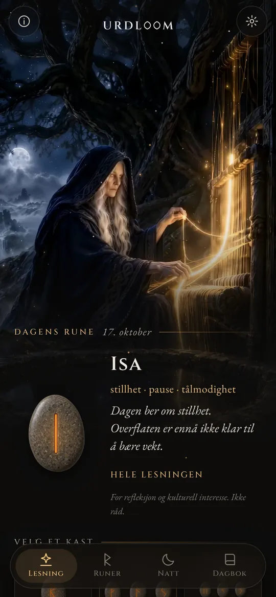
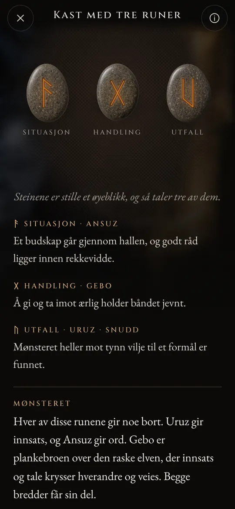
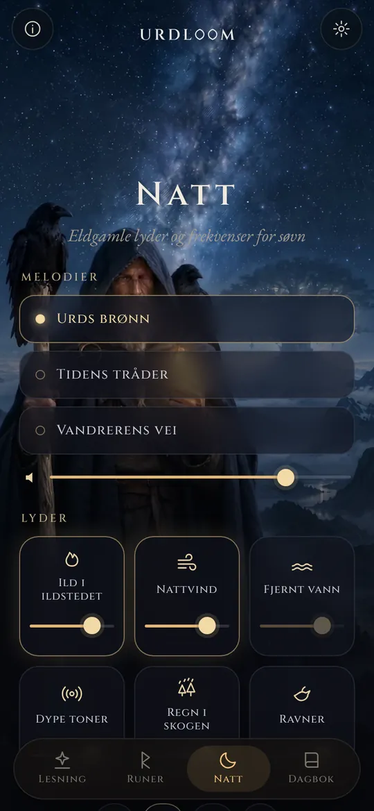
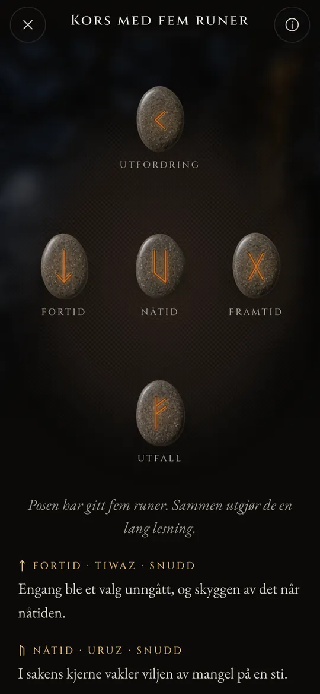

Runelesninger fra skjebnens brønn.
Kast Elder Futhark, les det som faller med de gamle diktenes stemme, og la nattens lyder bære deg inn i søvnen.
Tre kvinner sitter ved en brønn
I de gamle norrøne diktene sitter tre Norner ved en brønn under Yggdrasil, verdenstreet. De vanner røttene, rister staver og fastsetter livet til alle som blir født. Den eldste er Urd. Navnet hennes betyr det som har skjedd, og brønnen er oppkalt etter henne.
Urdloom har fått navnet sitt fra henne, og fra vevstolen der skjebnen ble sagt å bli vevd. Appen holder fast på den stemningen: en pung med steiner i hånden, en duk på gulvet og lesninger skrevet med sagaenes stemme heller enn horoskopets.

Derfra kommer møyer, mangt de vet, tre fra sjøen under treet.Völuspá, strofe 20
Hold, rist, slipp
Hold pungen, og steinene skrangler i hånden. Slipp, og de flyr ut på duken, ruller, legger seg til ro og snus én etter én. Lesningen kommer fram under dem.

Én rune
Én enkelt stein for dagen som ligger foran deg, eller for et spørsmål som kan besvares med ja eller nei. Trykk, så er den kastet.


Kast med tre runer
Situasjon, handling, utfall. Les dem fra venstre mot høyre som en kort saga, og så som en helhet: en avsluttende tråd viser hvordan de tre taler med hverandre.

Kors med fem runer
Fortid, nåtid og framtid tvers over midten, utfordringen over og utfallet under, med deg i hjertet av det hele.




Hver lesning er skrevet for hånd: de tjuefire runene, hvert par og alle 2 024 kombinasjonene av tre, på hvert av de tjueto språkene. Ingenting blir generert mens du venter.

De tjuefire runene
Elder Futhark er det eldste runealfabetet, risset fra omtrent det andre til det åttende århundret. De tjuefire tegnene deles inn i tre familier på åtte, kalt ætter, hver oppkalt etter guden som eier runen som står først. Berør en stein for å lese den.
Frøys ætt
Hagals ætt
Tyrs ætt
Runenavnene beholder sin gamle form på alle språk. De er navnene på selve tegnene, rekonstruert av forskere ut fra runediktene og de eldste alfabetene.
Runenes korte historie
Runer er bokstaver før de er noe annet. Germanske folk risset dem i tre, bein, metall og stein i omkring femten hundre år. Slik kom tegnene og den gamle skikken med å kaste lodd ned til oss.

Lodd på en hvit duk
Den romerske historikeren Tacitus skriver at germanerne skjærer en gren fra et frukttre i småbiter, merker dem med tegn og strør dem ut over en hvit duk. En prest eller husets overhode tar opp tre, én om gangen, og tyder dem. Han sier ikke at tegnene var runer, men bevegelsen er den samme som Urdloom tar vare på.
De første innskriftene
En beinkam funnet i Vimose-myra i Danmark bærer en av de eldste kjente runeinnskriftene, ett eneste ord: harja. Spydspisser, spenner og amuletter fra de samme århundrene viser at skriften allerede hadde spredt seg over hele Norden.
Hele rekken på én stein
På Kylver-steinen fra Gotland risset noen alle de tjuefire tegnene i rekkefølge, den eldste fullstendige futharken vi har. Rekken har fått navnet sitt fra de seks første bokstavene: f, u, th, a, r, k.
Gullhornene
Det ene av de to gullhornene fra Gallehus i Danmark bærer en stavrimet verselinje: Jeg, Hlewagastiz, Holts sønn, laget hornet. Det er en av de tidligste diktlinjene på noe germansk språk.
Seksten tegn for vikingtiden
I Skandinavia blir alfabetet skåret ned til seksten tegn, den yngre futharken. Tusenvis av minnesteiner reises med disse bokstavene, blant dem de store steinene i Jelling i Danmark.
Diktene skrives ned
Islandske skrivere skriver ned eddadiktene. I Völuspá sitter Nornene ved Urds brønn; i Hávamál henger Odin ni netter i det vindfulle treet og tar opp runene med et skrik.
Et vers for hver rune
Runedikt fra Norge og Island, sammen med et eldre angelsaksisk dikt, gir hver rune et kort vers: fe gir frendestrid, hagl er det kaldeste korn, is er svært glatt. Mye av det vi vet om runenes betydninger, kommer fra disse versene.
Å lese på nytt
Å bruke runene til ettertanke er en moderne gjenoppvekking, bygd på disse diktene og på bildene i Eddaene. Urdloom står åpent i denne tradisjonen: appen gir seg ikke ut for å være et eldgammelt orakel, den vil bare lese de gamle tegnene med omhu.

Eldgamle lyder og frekvenser for søvn
Når dagen er over, går vandreren ut under stjernene. Velg en melodi, legg lyder over den og still inn en tidtaker. Lydene spiller videre med skjermen av og toner ut av seg selv.
Tre melodier: Urds brønn, Tidens tråder og Vandrerens vei, bygd på strupesang, rammetromme og strøket tagelharpe.
Seks lag å blande, hvert med sitt eget nivå: ild i ildstedet, nattvind, fjernt vann, dype toner, regn i skogen og ravner.
Hver lyd er laget for Urdloom. Ingenting spilles fra internett.
Små ting som betyr noe
- En rune hver morgen
- Én stein venter med forsiden ned på den første skjermen. Hvis du vil, forteller en kort hilsen deg hver morgen hvilken rune som er trukket for deg.
- En dagbok
- Ta vare på lesningene som taler til deg, sammen med spørsmålet du stilte.
- Lesninger du kan dele
- Send en lesning som bilde: steinene slik de falt, og ordene under dem.
- Tjueto språk
- Hvert av dem skrevet og gjennomgått av folk som leser språket, med skrifttype og størrelse du kan endre.
Det som skjer her, blir her
Urdloom fungerer uten internett. Det finnes ingen konto, ingen registrering og ingen reklame, og appen inneholder ingen form for analyse eller sporing. Spørsmålene, lesningene og dagboken din blir værende på telefonen din.
PersonvernSpørsmål
Spår Urdloom framtiden?
Nei. Lesningene er laget for ettertanke og kulturell interesse. De peker, slik de gamle runene gjorde, og betydningen tar form i ditt eget liv. Ingenting i appen er medisinske, økonomiske, juridiske eller andre faglige råd.
Hvorfor låter språket gammelt?
Runene kommer fra en verden av dikt, sagaer og gåter. Vi skrev lesningene med den stemmen med vilje, og vi holdt dem så nær runetradisjonen vi kunne, på alle språk.
Trenger jeg internettilkobling?
Nei. Alt, fra lesningene til nattens lyder, ligger i appen.
Hvilke språk finnes?
Engelsk, tyrkisk, tysk, fransk, spansk, italiensk, portugisisk, russisk, ukrainsk, polsk, nederlandsk, svensk, norsk, finsk, gresk, arabisk, hindi, indonesisk, japansk, koreansk, kinesisk og albansk.
Skriv til oss
Spørsmål, et ord som leses feil på ditt språk, eller en lesning som ble hos deg: vi leser hver melding.
support@urdloom.com